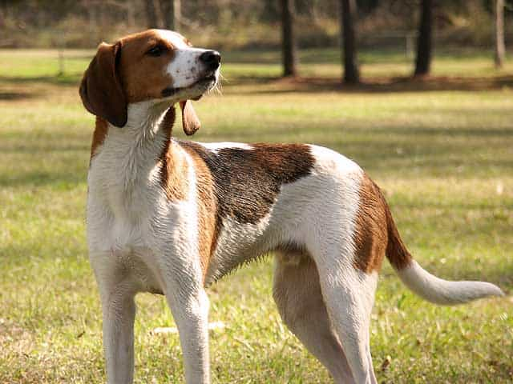

Image Author:
CC License: Public Domain
The Treeing Walker Coonhound
Thanks to their long legs, Coonhounds are swift and avid hunters. As the name implies, this dog breed was originally created to hunt raccoons (n.b. I do not condone the hunting of raccoons). They’re originally an English dog, and apparently are very loyal and dutiful.
The American Kennel Club ranks the Coonhound high in affection, trainability, and and energy, although due to their relative obscurity they’re only ranked 151 out of 284.
The Coonhound probably accounts for many of Ten-ten’s beagle-esque features. It looks like a tall beagle to me.